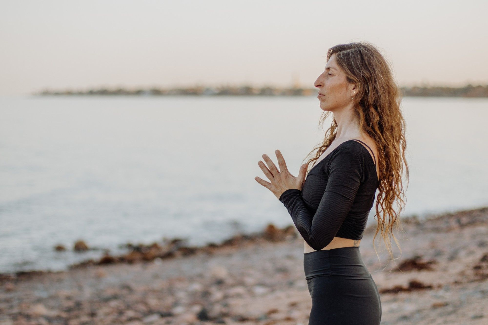
שינויים מתחילים
בצעדים קטנים
יוגה, מדיטציה וריטריטים בארץ, בסיני ובחו״ל, עם יפעת
היי, אני יפעת
כל החיים רציתי לחבר בין אנשים, אז יצרתי מרחבים שבהם אפשר לפגוש, לנשום, לזוז ולהיות ביחד.
היוגה נכנסה לחיים שלי לפני יותר מ־20 שנה, ומאז היא מלווה אותי בכל מיני דרכים. כבר 14 שנה שאני מלמדת, ובעשור האחרון אני גם לוקחת אנשים איתי לריטריטים בארץ, בסיני ובחו״ל.
אני מאמינה שכולנו רוצים לחיות חיים טובים יותר. החיים מזמנים לנו כל מיני חוויות ושינויים, ולא תמיד אנחנו יודעים איך לגשת אליהם. עם השנים גיליתי שיש כלים שיכולים לעזור לנו בדרך, כמו יוגה, מדיטציה, מיינדפולנס, מגע, שיחה ולפעמים פשוט להיות ביחד.
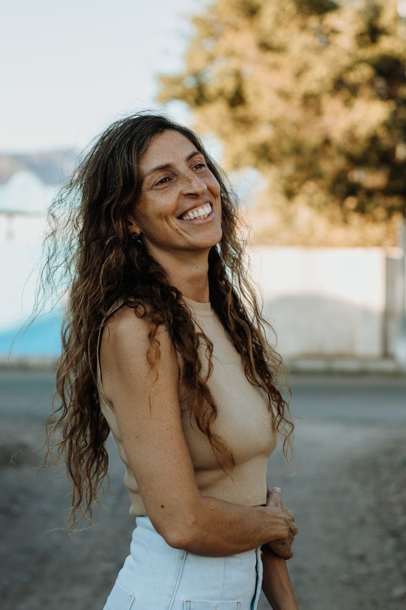
עדיין לומדת, עדיין שואלת
הדרך שלי התחילה הרבה לפני שפגשתי את היוגה, מתוך סקרנות ושאלות על החיים. איך נכון לי לחיות? מה באמת חשוב? איך אפשר לחיות חיים טובים יותר? ומה אלו החיים?
תמיד אהבתי ללמוד ובמשך תקופה עבדתי בהייטק, אבל עם הזמן הרגשתי שמשהו חסר לי, שהעבודה לא נותנת לי את תחושת המשמעות והסיפוק שחיפשתי. החלטתי לעזוב ולתת יותר מקום לדברים שבאמת מסקרנים וממלאים אותי. לאורך השנים מצאתי את עצמי נמשכת ליוגה, לתורות מהמזרח, לקבלה וליהדות, ולעוד כל מיני עולמות שפותחים לי כיווני מחשבה חדשים.
בשבילי, העולמות האלו הם אבני דרך להבין ולהתמצא קצת יותר מול המציאות.
עם השנים הבנתי שמה שאני הכי אוהבת בכל מה שאני עושה הוא המפגש עם אנשים. היוגה, המדיטציה וכל הדברים שאני לומדת הם חלק ממה שאני מביאה איתי, אבל בסופו של דבר, הכי מעניין אותי מה שקורה כשאנחנו נפגשים. השיחות שמתפתחות, הדברים שאנשים מביאים מעצמם, הרגעים שבהם מישהו אומר משהו ופתאום נפתח כיוון שלא חשבנו עליו. אני לומדת מהמפגשים האלה לא פחות ממה שאני מביאה אליהם, וזה מה שגורם לי להמשיך לעשות את מה שאני עושה.
לצאת רגע מהשגרה
ריטריטים הם רגע בשביל לקחת כמה ימים לעצמכם, לצאת קצת מהשגרה, להאט את הקצב, לזוז, לנשום, ללמוד, ליהנות ובעיקר להיות ביחד.
הדבר שאני הכי אוהבת במפגשים הוא האנשים שמגיעים אליהם. כל אחד מגיע ממקום אחר בחיים, עם הסיפור שלו. יש כאלה שמגיעים לבד, יש כאלה שבאים ביחד. כל אחד מביא איתו משהו אחר, כמו חתיכה בפאזל, ולאט לאט, דרך השיחות, החוויות והרגעים המשותפים, החתיכות מתחילות להתחבר ונוצרת תמונה שאף אחד מאיתנו לא היה יכול ליצור לבד.
את הריטריטים אני בוחרת לקיים במקומות שאני הכי אוהבת בעולם, כאלה שאני תמיד שמחה לחזור אליהם. אני אוהבת לקחת אנשים למקומות האלה ולחלוק איתם את מה שאני כל כך אוהבת בהם.
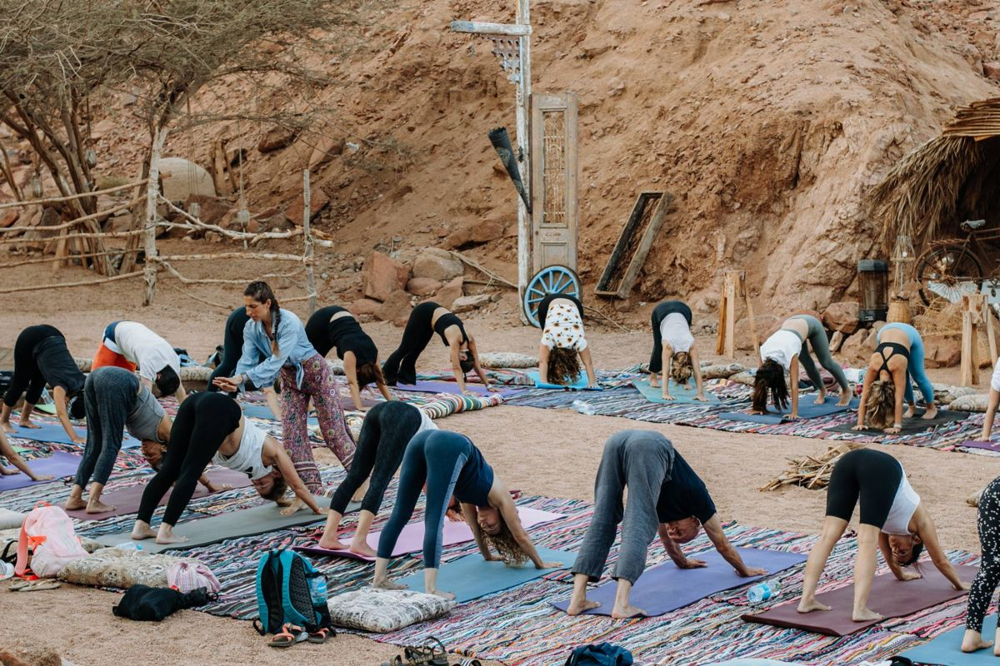
אנשים מפרגנים
יפעת יקרה,
רציתי להגיד לך תודה ענקית על חוויה מדהימה ❤️
הגעתי לריטריט הראשון בחיי בלי יותר מדי ציפיות, בעיקר קיוויתי ליהנות, להתנתק קצת מהשגרה ולנקות את הראש.
יצאתי עם תחושות מדהימות, עם שקט שהייתי כל כך צריך ועם תובנה אחת שאני לוקח איתי לשנה החדשה.
השנה אני רוצה להמשיך לבנות את החיים שאני אוהב, אבל בעיקר לפנות לעצמי יותר זמן כדי לחיות אותם... 😊
תודה לך על יום מיוחד, על האנרגיות הטובות ועל ההזדמנות לעצור לרגע את המרוץ ופשוט להיות.
אין לי ספק שזו רק ההתחלה.
גמר חתימה טובה.
יפעת יקרה,
תודה על מפגש מגמיש חשיבה וגוף, מעיר אנרגיה ומרומם.
הייתי זקוקה לחוויה הזאת יותר משידעתי.
לוקחת לעצמי:
1. לצאת תדיר לטבע.
2. לערוך רשימת פעולות כדי להאיר את יומו של מישהו אחר.מודה לך על האור שיצקת אליי היום.
תודה עלייך 🙏
כנרת
יפתום,
רציתי להגיד לך תודה ענקית על כל מה שאת עושה בשבילנו ❤️
על ההשקעה, הדאגה, הסבלנות והאווירה הטובה שאת מביאה איתך לכל נסיעה לסיני 🏝️☀️
אין ספק שאת הפכת את החוויה להרבה יותר מיוחדת, כיפית ובלתי נשכחת.
מאחלת לך שתמיד תמשיכי לעשות את מה שאת אוהבת, לשמח אנשים ולהפיץ את האור והאנרגיות הטובות שלך.
תודה על הזכות להכיר אותך ולחוות איתך את סיני ❤️
אוהבת ומעריכה המון
הי יפעת.
מכל הדברים וההסחות, לא רשמתי לך מילה מאז שעשינו את הריטריט איתך.
ורציתי להגיד לך שכל כך(!) נהניתי. הרבה מאוד בזכותך.
אז - תודה לך על השקט שלך ועל הריאות שלי שהתמלאו באוויר. על ההנחיה ועל המילים הטובות. וגם - על ההבנה המהירה וההתחשבות. ובכלל.
באמת - תודה.
מאחלת לך את כל הטוב שתרצי לעצמך בעולם כולו.
יפעת ואווו כמה שאני אכתוב זה לא יתאר את החוויה.
רציתי להגיד לך תודה ענקית על ריטריט מלא באנרגיות טובות, רגעים מיוחדים, צחוק, חוויות ואנשים מדהימים ❤️
על כל הלב והנשמה בכל פרט, ויצרת לנו כמה ימים של עצירה, נשימה, כיף והתחברות. (לא התנתקות 😉)
יצאתי מהימים האלה עם הלב מלא, עם חיוך ענק ועם תחושה שקיבלתי הרבה יותר ממה שציפיתי.
יש חוויות שפשוט נשארות איתך הרבה אחרי שהן נגמרות וזה בדיוק מה שיצרת לי ❤️
תודה על מי שאת, על מה שאת מביאה איתך ועל הזכות להיות חלק מהקסם הזה שלך.
יצאתי עם לב מלא זיכרונות. מחכה לריטריט הבא ✨❤️
חברים תודה רבה לכולם, היה ממש מושלם!
מעולם לא חשבתי שאזכה במרקם אנושי כל כך מגוון, מיוחד, נטול מסיכות, מעניין ומעשיר.
ובכלל החיבור והאווירה שנוצרו בשלושה ימים בלבד.
וליפעת היקרה, זאת בהחלט זכות להשתתף בסדנאות שלך. תודה על הכל: המילים, מעגלי שיח פורים, תרגולי יוגה עוצמתיים ומעצימים ומהאנרגיות המיוחדות שלך שהפכו כל רגע למעניין ומעשיר ❤️❤️
שלחתי לך כדי שתתעוררי ותביני שהיום לא בא לך, אבל יבוא יום ותצטערי שלא עשית את זה ולצערי יהיה מאוחר.
תעשי משהו שזה יקרה ויפה שעה אחת קודם.
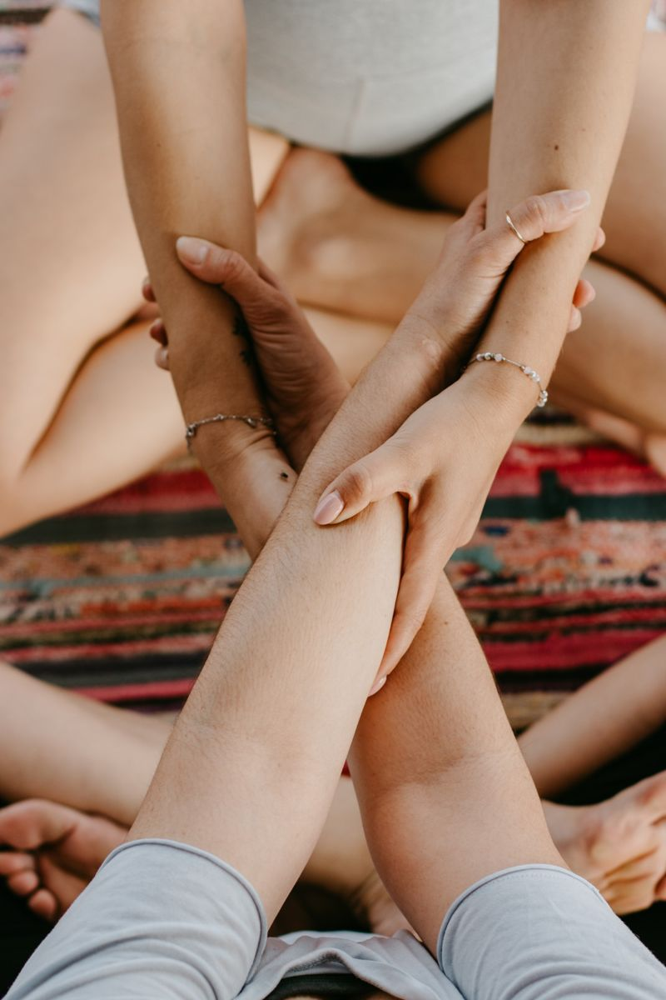
דווקא בתקופה שבה כל אחד כל כך בתוך העולם שלו, אני מרגישה שיש צורך גדול פשוט להיות ביחד. להכיר, לדבר, לצחוק, לעשות דברים יחד ולהיות חלק מקבוצה.
רגעים מהתרגול
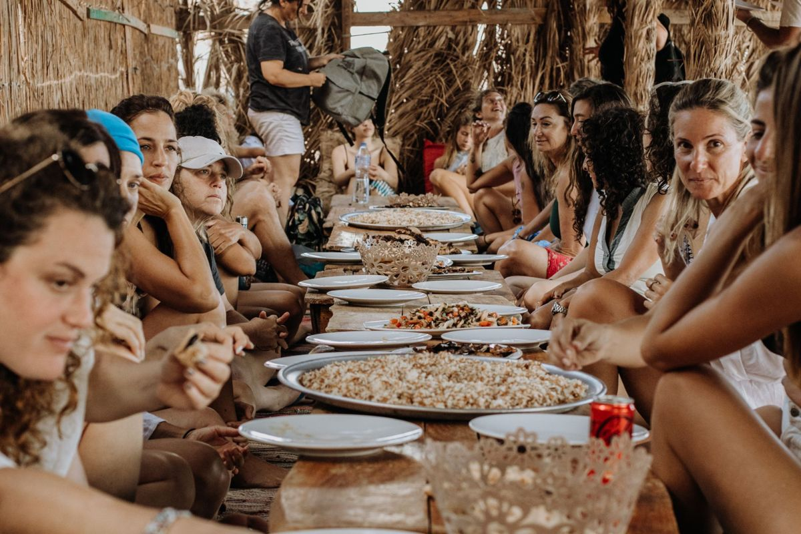
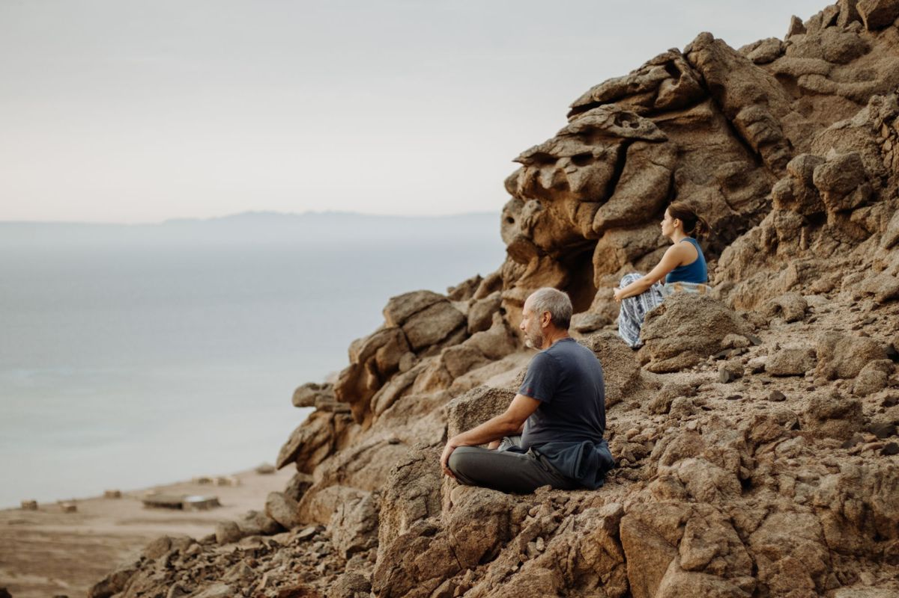
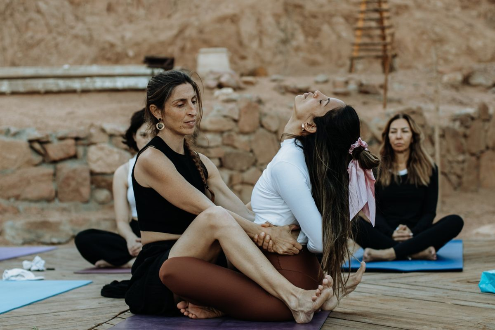
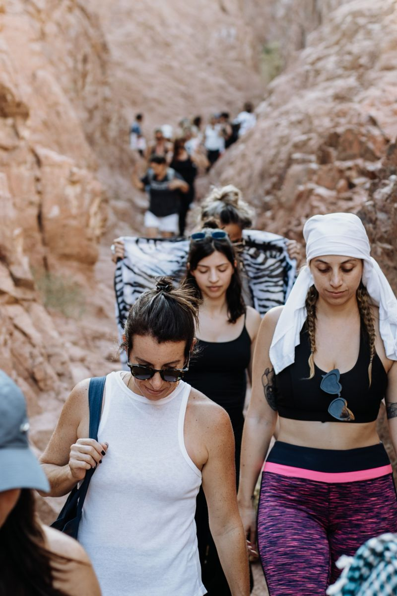
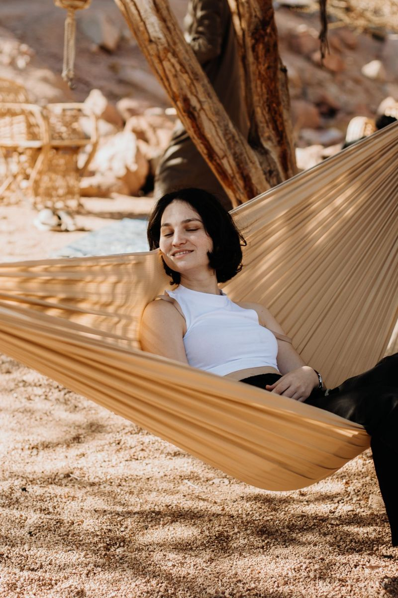
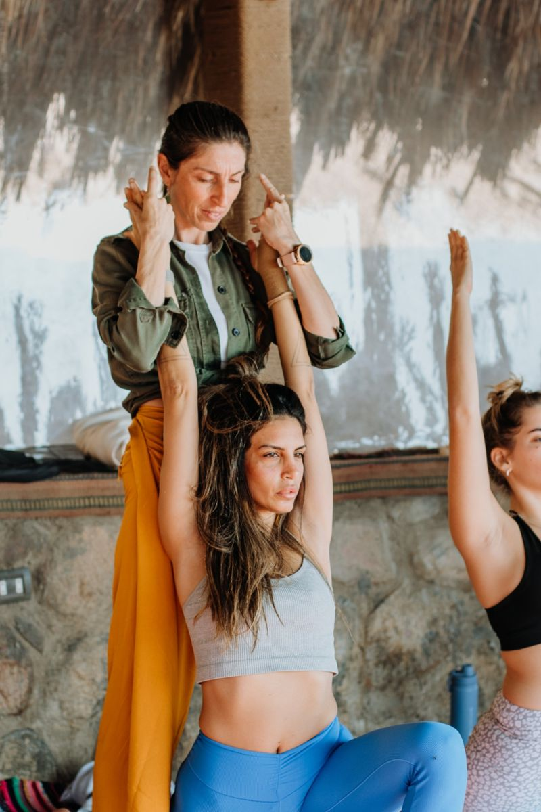
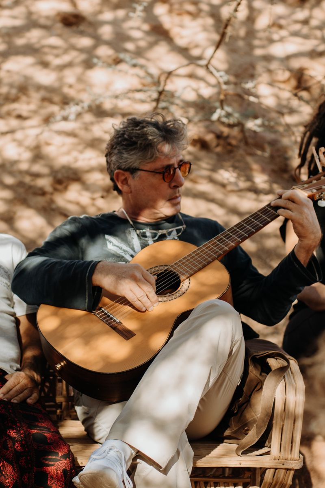
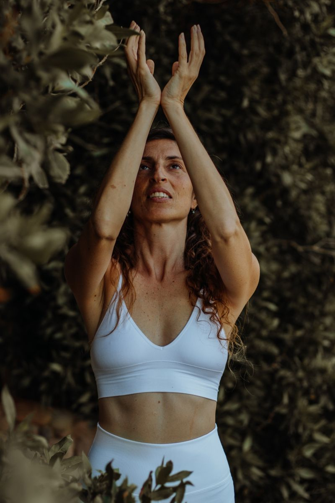
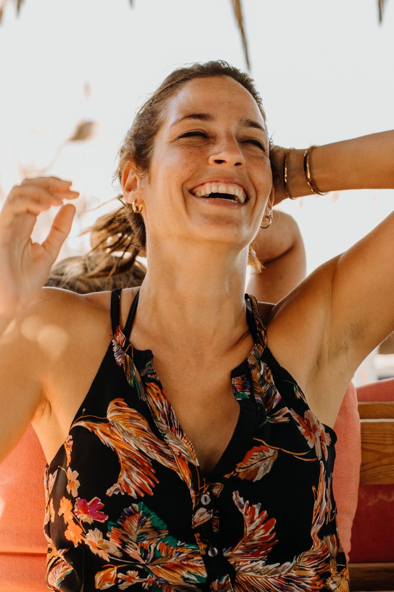
עוד לא מוכנים לריטריט?
אפשר להתחיל מצעד קטן: לתרגל איתי מהבית בערוץ היוטיוב, בקצב שלכם, ולעקוב באינסטגרם כדי לשמוע ראשונים על הריטריט הבא.
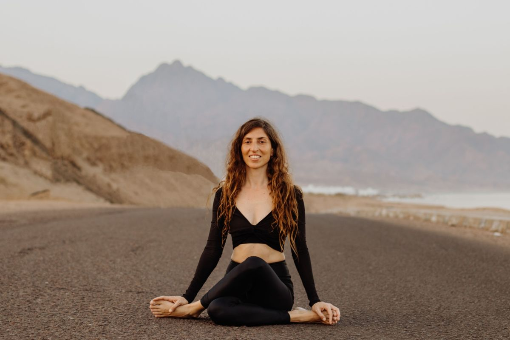
יצירת קשר
לקחת כמה ימים, ליהנות, להכיר, ללמוד, להיות ביחד, ולחזור הביתה עם קצת יותר ממה שהגענו איתו.
מחכה לכם ❤️
השאירו פרטים ואחזור אליכם בהקדם
תודה! קיבלתי את הפרטים ואחזור אליכם בקרוב 🙏